20171231
ssh test@test.com /bin/sh < hello.sh
https://stackoverflow.com/questions/36309063/how-can-i-test-a-change-made-to-jenkinsfile-locally
20171227
Jenkins pipeline parallel
20171225
Jenkins pipeline
20171224
20171223
GoCD
20171222
20171218
http://d2.naver.com/helloworld/329631
http://d2.naver.com/helloworld/329631
20171216
20171215
Remote for Slides
https://limhenry.xyz
삶의 의미
20171214
https://medium.com/@hooncho/%EC%8A%A4%EC%BC%80%EC%B9%98%EB%A1%9C-%EB%94%94%EC%9E%90%EC%9D%B8-%ED%88%B4%EC%9D%84-%EB%B0%94%EA%BE%B8%EA%B8%B0-%EC%A0%84%EC%97%90-%EA%B3%A0%EB%AF%BC%ED%95%B4%EC%95%BC-%ED%95%A0-%EA%B2%83%EC%97%90-%EB%8C%80%ED%95%B4-56a20f55c05e
20171211
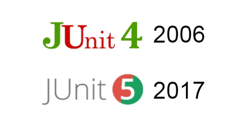
20171209
ParameterizedTest
20171206
MySQLWorkbench - Database - Migration Wizard
20171205
Emojis are the new hieroglyphs.
https://www.reddit.com/r/programming/comments/6za50o/junit_5_released/
20171203
20171201
20171129
https://www.facebook.com/fupfin.geek/posts/661378070917846
20171128
setHttpOnly
Your wish is my command.
20171124
Lomboks Extension Methods
https://dzone.com/articles/lomboks-extension-methods
20171121
이제 mockito가 좀 익숙해진다.
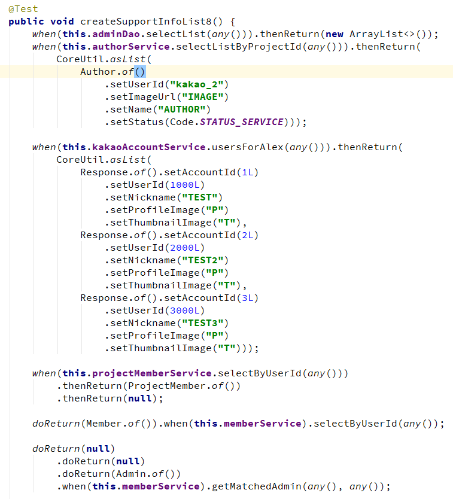
20171120
Take The Power Back - Rage Against The Machine [Guitar Cover]

20171119
requery
https://github.com/requery/requery
20171117
METALLICA “One” - 2 Girls 1 Harp (Harp Twins) HARP METAL

mybatis + fluent-jdbc transaction
20171116
micro orm - order by
micro orm - joinless
20171115
언제가부터 Unit Test와 Integration Test 두개를 만들고 있더라.
2개가 서로를 잘 보안해준다.
Love is just passion that can turn.
It turns into contempt and murder.
People are weak.
People are selfish.
When people have the freedom to choose,
they choose wrong every single time.
사랑은 변덕스러운 열정일 뿐이에요.
결국 경멸하고 죽이죠.
사람들은 나약해요.
게다가 이기적이고
선택의 자유가 주어지면
잘못된 선택을 하죠.
딘 한번의 예외도 없이
- The Giver
정신을 차리고 보니 작은 ORM를 만들고 있더라.
20171114
20171113
Creep - Vintage Postmodern Jukebox Radiohead Cover ft. Haley Reinhart

Nothing Else Matters - Postmodern Jukebox ft. 15 Year Old Caroline Baran - Metallica Cover

Chop Suey" (System of a Down) Jazz Cover by Robyn Adele Anderson

기타월드 선정 100대 기타 솔로곡
6위: Novermber Rain
Guns ‘n’ Roses (Slash), Use your Illusion 1, 1991
7위: One
Metallica (Kirk Hammett), And Justice for All, 1988
8위: Hotel California
Eagles (Don Felder, Joe Walsh), Hotel California, 1976
19위: Floods
Pantera (Dimebag Darrell), The Great Southern Trendkill, 1996
20위: Bohemian Rhapsody
Queen (Brian May) , A Night at the Opera, 1975
23. Bulls on Parade, Tom Morello,
Rage Against the Machine-Evil Empire (1996)
26. Smells Like Teen Spirit, Kurt Cobain,
Album : Nirvana-Nevermind(1991)
35. Cemetery Gates, Soloist : Dimebag Darrell,
Pantera-Cowboys from Hell (1990)
63. Scar Tissue, Soloist : John Frusciante,
Red Hot Chili Peppers-Californication (1999)
89. Killing in the Name, Soloist : Tom Morello,
Rage Against the Machine-Rage Against the Machine (1992)
https://nitetrip.wordpress.com/2006/07/10/%EA%B8%B0%ED%83%80%EC%9B%94%EB%93%9C-%EC%84%A0%EC%A0%95-100%EB%8C%80-%EA%B8%B0%ED%83%80-%EC%86%94%EB%A1%9C%EA%B3%A1/
20171112
Drowning Pool - Bodies

20171110
테스트 코드 짜고 리팩토링하고
테스트 코드 짜고 리팩토링하고
테스트 코드 짜고 리팩토링하고
신해철 - 절망에 관하여 (1996年)
뜨겁던 내 심장은 날이 갈수록 식어 가는데
내등 뒤엔 유령들처럼 옛 꿈들이 날 원망하며 서있네
무거운 발걸음을 한 발자욱씩 떼어 놓지만
갈 곳도 해야할 것도 또 내가 누구인지도 모르는데
눈물 흘리며 몸부림치며 어쨌든 사는 날까지 살고 싶어
그러다 보면 늙고 병들어 쓰러질 날이 오겠지
하지만 그냥 가보는거야 그냥 가보는 거야
내 목을 졸라오는 올가미처럼 그 시간이 온다
내 초라한 삶의 이유를 단 한번만이라도 볼 수 있다면
눈물 흘리며 몸부림치며 어쨌든 사는 날까지 살고 싶어
그러다 보면 늙고 병들어 쓰러질 날이 오겠지
하지만 그냥 가보는거야 그냥 가보는 거야

20171109


20171108
20171107
QRT : Quick Reaction Team
20171106
Tear1
https://medium.com/level-up-web/best-online-typography-tools-for-designers-and-developers-4be40c148965
20171102
http://www.nikonsmallworld.com/galleries/photo
Fluent JDBC
https://github.com/zsoltherpai/fluent-jdbc
20171101
개인 목적으로 만든 프로그램 있나요?
동료와 기술 토론중에 의견이 달라서 논쟁이 된 주제가 있나요?
Area 51
20171030

20171028
Greenplum
http://d2.naver.com/helloworld/29533
알쓸신잡2
20171024
20171023
It’s All the Same
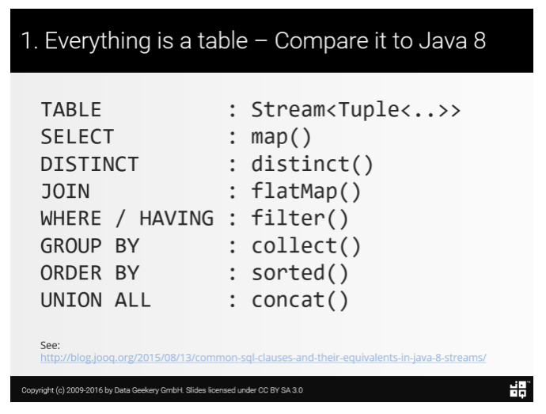
https://blog.jooq.org/2016/12/14/sql-streams-for-comprehension-its-all-the-same/
UriComponentsBuilder
Six
20171021
Validation Test
20171020
생물을 보고 있으면 이건 뭐 어떻게 설명이 안된다.
20171017
Eliot Pub
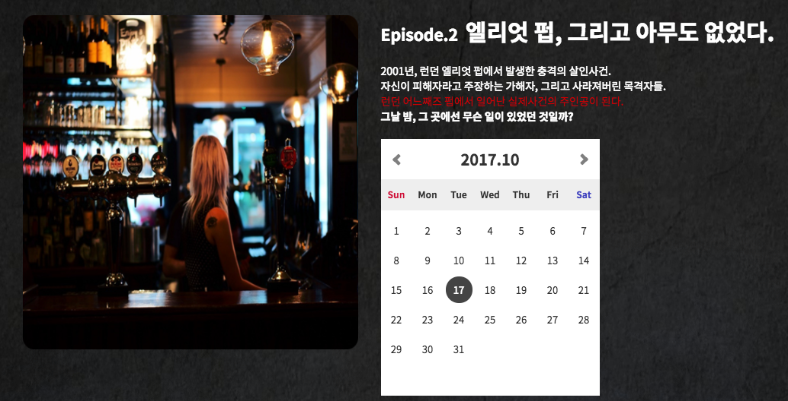
20171016
20171015
코딩은 재밌지 하지만 테스트는
20171014
1935-2017 한 번쯤 들어본 가요 명곡들 / 1935-2017 Best K-POP Songs

1955-2017 한 번쯤 들어본 팝송 명곡들 / 1955-2017 Best POP Songs

Acoustic Cafe
Je Te Veux
 Last Carnival
Last Carnival
 Long Long Ago
Long Long Ago
 https://namu.wiki/w/%EC%96%B4%EC%BF%A0%EC%8A%A4%ED%8B%B1%20%EC%B9%B4%ED%8E%98
https://namu.wiki/w/%EC%96%B4%EC%BF%A0%EC%8A%A4%ED%8B%B1%20%EC%B9%B4%ED%8E%98
Test Uplading File : ChromeDriver + Java Robot
20171013
Compiled Language VS Scripting Language
개발왕 김코딩
http://huns.me/
https://www.jetbrains.com/research/devecosystem-2017/java/
Mother of Mine - 어머니 - Jennifer Jeon

Grandfather's Clock - 할아버지의 낡은 시계 - Jennifer Jeon

20171012

20171011
20171009

Module Graph
20171008
Pronunciation of Dad/Dead and Model/Mother

20171007
"Armored Core 5" E3 Trailer

20171005
Wing suit
https://namu.wiki/w/%EC%9C%99%EC%8A%88%ED%8A%B8
지적 대화를 위한 넓고 얕은 지식
20171003
20171002
City Tour

20171001
두둥
Testing
https://medium.com/@jamesjefferyuk/common-excuses-why-developers-dont-test-their-software-908a465e122c
20170930
Jigsaw
20170927
Robert Hutchings Goddard
20170926
Introducing ATP
https://www.youtube.com/watch?v=qaS-_k3k0JM
Kinesin Walking Narrated Version for Garland

20170925
ATP : Adenosine triphosphate
https://www.youtube.com/watch?v=39HTpUG1MwQ
Matrix
PCR: Polymerase Chain Reaction
Java9
Helicase Enzyme
 https://fineartamerica.com/products/ruvbl1-helicase-enzyme-laguna-design-art-print.html
https://fineartamerica.com/products/ruvbl1-helicase-enzyme-laguna-design-art-print.html
Scops owl
 http://www.indica.or.kr/xe/Birds/3473706
http://www.indica.or.kr/xe/Birds/3473706
Life Science - Protein synthesis
 이원론: dualism
다원주의: pluralism
이원론: dualism
다원주의: pluralism
20170924
DNA: Deoxyribo Nucleic Acid
RNA: RiboNucleic Acid
http://blog.naver.com/PostView.nhn?blogId=tigermas&logNo=221023818686&parentCategoryNo=4&categoryNo=&viewDate=&isShowPopularPosts=true&from=search
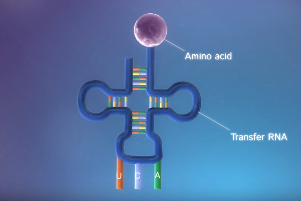
https://www.youtube.com/watch?v=gG7uCskUOrA
단백질
아미노산 연결체
http://ziyegain.tistory.com/entry/%ED%8E%A9%ED%83%80%EC%9D%B4%EB%93%9C%EC%9D%98-%EC%97%AD%ED%95%A0
hemoglobin
https://namu.wiki/w/%ED%97%A4%EB%AA%A8%EA%B8%80%EB%A1%9C%EB%B9%88
Life
출생: Birth
친구: Friend
학업: Study
취업: Job
사랑: Love
결혼: Marriage
육아: Parenting
생계: Living
건강: Health
죽음: Death
20170923
UploadProfileImage
20170921
내 시대가 끝났을때 어떻게 살아가야 할까?
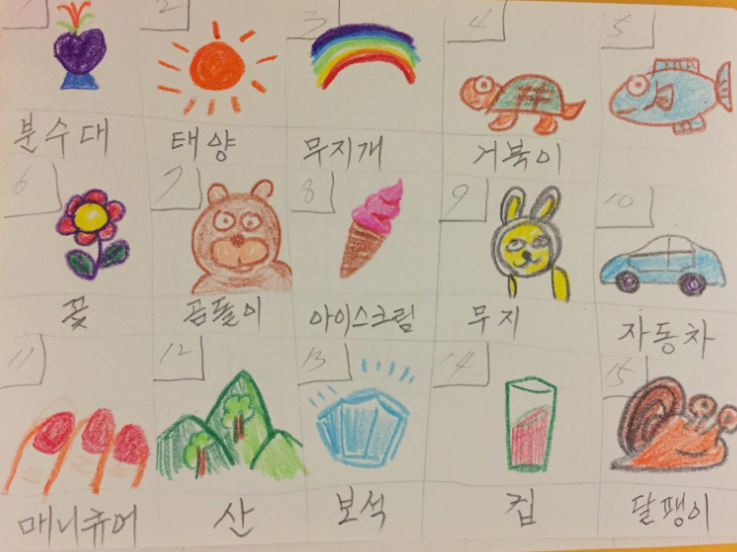
20170920
squash
고요해지는 방법
20170918
Perforated plate
http://storefarm.naver.com/takongpan
20170915
사실 자기가 이해하고 싶은데로 이해하는 거죠.
100회 - [100회 특집] 내 마음 속 지대넓얕(2부)
Virus
https://mobile.twitter.com/teoremadegoedel/status/478342023997837313/photo/1
20170914
Reductionism
https://xkcd.com/435/
20170913
Test Double
https://medium.com/@SlackBeck/%EB%8B%A8%EC%9C%84-%ED%85%8C%EC%8A%A4%ED%8A%B8-%EC%BC%80%EC%9D%B4%EC%8A%A4%EC%99%80-%ED%85%8C%EC%8A%A4%ED%8A%B8-%EB%8D%94%EB%B8%94-test-double-2b88cccd6a96
5 Best JavaScript Frameworks in 2017
https://hackernoon.com/5-best-javascript-frameworks-in-2017-7a63b3870282
20170910
https://earth.google.com/web/@9.54946005,112.89074824,-0.75517937a,5155.49021525d,30y,-43.97871731h,7.89316828t,0r
20170909
Balay
https://earth.google.com/web/@46.54949587,77.16887541,344.57085216a,21108.51096022d,30y,118.54300357h,0t,0r
20170908
내가 여기 있는 건 무슨 뜻일까?
서태지 - 슬픈아픔
20170907
Center pivot irrigation
https://earth.google.com/web/@39.38233761,-101.00272408,968.71186264a,22387.0051413d,30y,-10.70887203h,30.0972593t,0r
20170906
Versailles
https://earth.google.com/web/@48.80433751,2.12181467,140.13760931a,3090.44862455d,30y,-67.83640481h,30.00813061t,0r
Sir Karl Raimund Popper
20170904
Monad
https://dzone.com/articles/whats-wrong-java-8-part-iv
20170903
Monument Valley Navajo Tribal Park
https://earth.google.com/web/@36.9884555,-110.07269858,1591.27170084a,4694.48887651d,35y,78.5303847h,83.80812849t,0.00000121r/data=ChEaDwoJL20vMDJrX3NuGAEgAQ
20170902
Selly's Room
20170831
Bermuda Dunes
https://earth.google.com/web/@33.74649537,-116.30767873,35.18628917a,1301.71081152d,30y,0.00000001h,34.14400514t,-0r
20170829
https://earth.google.com/web/@32.17659172,-110.85205223,820.94671296a,2581.89130202d,30y,0h,0t,0r
20170828
Say Hello to Your Test Coverage
https://dzone.com/articles/say-hello-to-your-test-coverage-comic
Cape Coral
https://earth.google.com/web/@26.57014498,-81.97291657,-2.96786226a,13492.36664426d,35y,359.88217489h,0t,0r
20170826
https://earth.google.com/web/@41.8372419,12.48940261,47.24085055a,597.63611463d,35y,119.73945367h,69.30516581t,0r/data=ChEaDwoJL20vMDEyY18yGAEgAQ
20170825
Platoon
I think now, I looking back, we did not fight the enemy,
we fought ourselves - and the enemy was in us.
The war is over for me now, but it will always be there - the rest of my days.
As I am sure Elias will be - fighting with Barens for what Rhah called possession of my soul.
There are times since I have felt like the child born of those two fathers.
But be there as it may, those of us who did make it have an obligation to build again,
to teach to others what we know and to try with what's left of our lives to find a goodness and meaning to the life.
20170824
Repository
20170823
Page, Pageable, Sort, Order는 default constructor가 없습니다.
Bora Bora
https://earth.google.com/web/@-16.5141122,-151.7339627,17.9984391a,24638.86801014d,35y,115.47239916h,67.40250859t,0r/data=ChEaDwoJL20vMDJqX2tqGAIgAQ
Runaway Bay
https://earth.google.com/web/@-27.91775974,153.40362474,10.26798021a,2525.41676342d,35y,-78.37124962h,46.14528735t,-0r/data=ChEaDwoJL20vMDc5YnN4GAEgAQ
20170822
Guggenheim Museum Bilbao
https://earth.google.com/web/@43.26856862,-2.93493104,6.54416959a,726.53068487d,35y,171.6170442h,63.21461906t,0r
Paging, Sorting
Pageable, Sort
Roosevelt Four Freedom Park
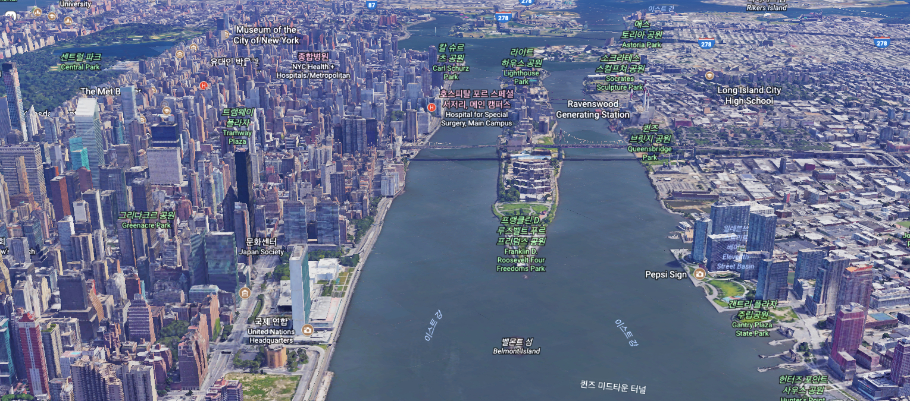
Subquery
Scalar subquery
Inline view
Subquery
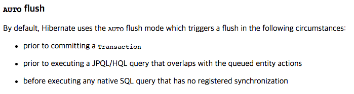
https://docs.jboss.org/hibernate/orm/5.1/userguide/html_single/chapters/flushing/Flushing.html
20170821
https://java.libhunt.com/
20170820
20170818
Google Earth
mapAndIfPresent
20170817
querydsl-maven-plugin
RNN VS LSTM
The Fall of Montmorency
Castle Rock
20170816
https://www.datacamp.com
20170814
Kotlin도 어렵다.
Function literals with receiver
Table type에 insert function를 추가합니다.
insert function은 body라는 파리미터를 가지고 InsertStatement를 return합니다.
body는 InsertStatement 파라미터를 가지고 return을 하지 않는 function입니다.
insert function은 table를 파라미터로 InsertStatement 생성합니다.
그리고 body function을 위에서 생성한 InsertStatement 파라미터로 실행한 후에
InsertStatement가 가지고 있는 execute를 실행 후에 그 결과값을 return합니다.
Kotlin last parameter is function
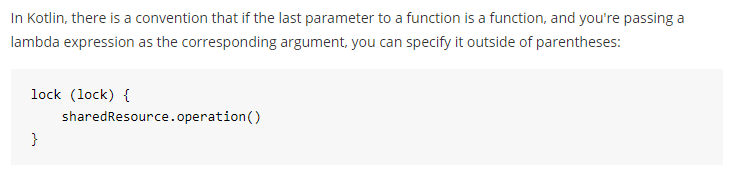
Exposed
Ansible Galaxy
20170812
Blind Spot
20170811
Kotlin
20170810
Collections.kt

lencois maranhenses
https://en.wikipedia.org/wiki/Len%C3%A7%C3%B3is_Maranhenses_National_Park
지대넓얕
20170809
허무주의 = 비관주의 + 현실주의
코딩은 재미있는 부분이 있지만 복잡하고 귀찮은 작업이 훨씬 많다.
Coding have some fun but complex and troublesome work is much more.
Coding is fun, but there are a lot of complicated and cumbersome tasks.
Google Calendar Api
20170808
Interstellar
OCP
20170806
Java는 어렵다.
Maven은 어렵다.
Git은 어렵다.
Dead or alive, you're comming with me!
20170805
20170804
vaadin
https://demo.vaadin.com
20170803
arthropod 절지동물
echinoderm 극피동물
rodent 설치류
mammals 포유류
amphibia 양서류
reptile 파충류
birds 조류
crustacea 갑각류
추상화보다 if-else가 더 좋은 것 같다.
추상화를 했는데 왜 이렇게 했는지 기억이 안난다.
Large Magellanic Cloud
Hubble Ultra Deep Field
https://ko.wikipedia.org/wiki/%ED%97%88%EB%B8%94_%EC%9A%B8%ED%8A%B8%EB%9D%BC_%EB%94%A5_%ED%95%84%EB%93%9C
2개의 Interface와 7개의 클래스로 구성한 디자인
1개의 클래스에 if else로 된 디자인
S said: 디자인 보다는 테스트 케이스가 있는지가 더 중요하죠.
20170802
quantum entanglement
20170801
Enum을 알게 되면서 모든 것이 Enum으로 보인다.
Optional을 알게 되면서 모든 것이 Optional으로 보인다.
Functional을 알게 되면서 모든 것이 Functional으로 보인다.
AOP을 알게 되면서 모든 것이 AOP으로 보인다.
Fluent를 알게 되면서 모든 것이 Fluent으로 보인다.
Generic를 알게 되면서 모든 것이 Generic으로 보인다.
20170731
디자인 방법
Inheritance/Interface/Composition/Enum
AOP
Functional
https://emaren84.github.io/blog/archivers/how-to-avoid-inheritance-in-ruby-kor
20170730
20170729
Maven Central
http://jojoldu.tistory.com/161
https://www.lesstif.com/pages/viewpage.action?pageId=30277671
http://westzero.tistory.com/117
20170728
ChromeDriver에서 headless 가능해지다.
페이스북에서 말보다는 코드를 보여주면 좋겠다.
https://memegenerator.net/instance/61675877/futurama-fry-show-me-the-code-and-stop-talking
20170727
당신이 얻으려는 해답은 당신의 질문에 달려있다.
The answer you get depend upon the questions you ask.
bootstrap

20170725
20170724
fluent html builder?

JFrog Bintray
GPG
20170723
coverage
다크나이트도 인터스텔라도 오늘 본 덩게르크도
크리스토프 놀란의 특유의 지루함을 느낄 수 있었다.
20170722
HtmlBuilder
20170720
HtmlBuilder
20170719
Nautilus
https://www.mystorybook.com/books/120446
PermissionBuilder
AssertList
20170718
Generate mockito source
20170717
Optional.get()
Readability VS Reusability
소스코드의 재활용성을 높히면 소스코드의 가독성이 떨어지고
소스코드 가독성이 좋으면 중복코드가 있을 수 있다.
20170716
Bean Validation JSR 303
Developer Ecosystem Survey 2017
https://www.jetbrains.com/research/devecosystem-2017/java/
The four fundamental forces
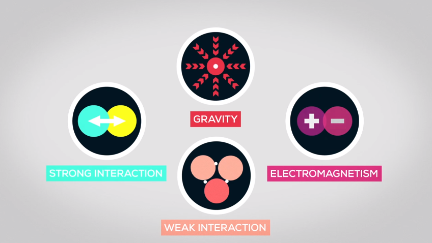
https://www.youtube.com/watch?v=_lNF3_30lUE
20170715
Predicate or
20170714
ValidationBuilder
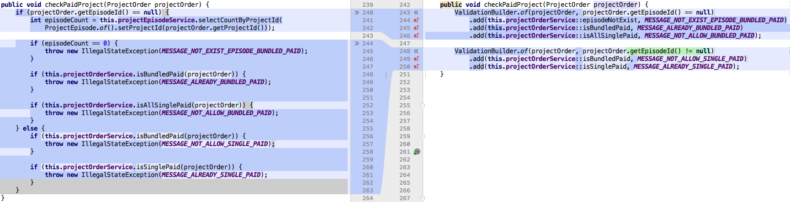
Differential Gear

20170713
paid
20170712
Earth
difficult choice
http://likejazz.com/post/153255057915/oop-%EC%B6%94%EC%83%81%ED%99%94%EC%9D%98-%ED%95%A8%EC%A0%95
http://docs.likejazz.com/senior-developers/
Antonie van Leeuwenhoek
http://blog.daum.net/bungai007/8671545?srchid=IIMw3khn000
20170711
https://www.pinterest.co.kr/pin/605804587345236562/
https://quotefancy.com/quote/13789/Vincent-van-Gogh-Normality-is-a-paved-road-It-s-comfortable-to-walk-but-no-flowers-grow
Visual VM, BTrace
Flow
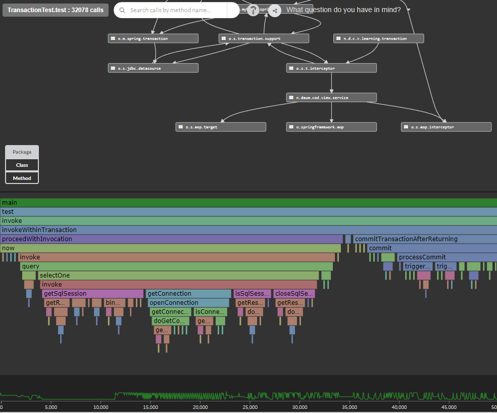
http://findtheflow.io/
org.springframework.transaction.interceptor.TransactionInterceptor.invoke
org.springframework.transaction.interceptor.TransactionAspectSupport.invokeWithinTransaction
org.springframework.transaction.interceptor.TransactionInterceptor$1.proceedWithInvocation
CoreService.now
org.springframework.transaction.interceptor.ExposeInvocationInterceptor.invoke
org.mybatis.spring.SqlSessionTemplate.selectOne
org.mybatis.spring.SqlSessionTemplate$SqlSessionInterceptor.invoke
org.mybatis.spring.transaction.SpringManagedTransaction.getConnection
org.mybatis.spring.transaction.SpringManagedTransaction.openConnection
org.springframework.jdbc.datasource.DataSourceUtils.getConnection
org.springframework.jdbc.datasource.DataSourceUtils.doGetConnection
20170710
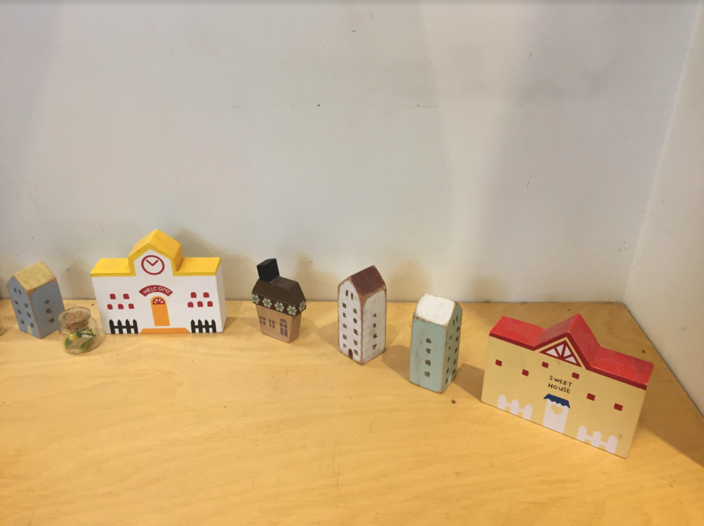
차라투스트라는 이렇게 말했다.
20170709
Listening, Testing, Coding, Designing

20170708
Mammonism
가장 좋은 국가 통치 형태와 새로운 섬 유토피아에 관한 진실이 담긴 황금 같은 책자
@Transactional이 있을 때
at OperationItemService.selectListBySystemMenuName(OperationItemService.java:41)
at OperationItemService$$FastClassBySpringCGLIB$$6f8c2f3f.invoke(:-1)
at org.springframework.cglib.proxy.MethodProxy.invoke(MethodProxy.java:204)
at org.springframework.aop.framework.CglibAopProxy$CglibMethodInvocation.invokeJoinpoint(CglibAopProxy.java:720)
at org.springframework.aop.framework.ReflectiveMethodInvocation.proceed(ReflectiveMethodInvocation.java:157)
at org.springframework.transaction.interceptor.TransactionInterceptor$1.proceedWithInvocation(TransactionInterceptor.java:99)
at org.springframework.transaction.interceptor.TransactionAspectSupport.invokeWithinTransaction(TransactionAspectSupport.java:280)
at org.springframework.transaction.interceptor.TransactionInterceptor.invoke(TransactionInterceptor.java:96)
at org.springframework.aop.framework.ReflectiveMethodInvocation.proceed(ReflectiveMethodInvocation.java:179)
at org.springframework.aop.framework.CglibAopProxy$DynamicAdvisedInterceptor.intercept(CglibAopProxy.java:655)
at OperationItemService$$EnhancerBySpringCGLIB$$a1cab805.selectListBySystemMenuName(:-1)
at IndexController.index(IndexController.java:101)
at IndexController$$FastClassBySpringCGLIB$$304cffa7.invoke(:-1)
at org.springframework.cglib.proxy.MethodProxy.invoke(MethodProxy.java:204)
at org.springframework.aop.framework.CglibAopProxy$CglibMethodInvocation.invokeJoinpoint(CglibAopProxy.java:720)
at org.springframework.aop.framework.ReflectiveMethodInvocation.proceed(ReflectiveMethodInvocation.java:157)
at org.springframework.aop.interceptor.ExposeInvocationInterceptor.invoke(ExposeInvocationInterceptor.java:92)
at org.springframework.aop.framework.ReflectiveMethodInvocation.proceed(ReflectiveMethodInvocation.java:179)
at org.springframework.aop.framework.CglibAopProxy$DynamicAdvisedInterceptor.intercept(CglibAopProxy.java:655)
at IndexController$$EnhancerBySpringCGLIB$$b66b3df6.index(:-1)
@Transactional이 없을 때
at OperationItemService.selectListBySystemMenuName(OperationItemService.java:39)
at IndexController.index(IndexController.java:101)
at IndexController$$FastClassBySpringCGLIB$$304cffa7.invoke(:-1)
at org.springframework.cglib.proxy.MethodProxy.invoke(MethodProxy.java:204)
at org.springframework.aop.framework.CglibAopProxy$CglibMethodInvocation.invokeJoinpoint(CglibAopProxy.java:720)
at org.springframework.aop.framework.ReflectiveMethodInvocation.proceed(ReflectiveMethodInvocation.java:157)
at org.springframework.aop.interceptor.ExposeInvocationInterceptor.invoke(ExposeInvocationInterceptor.java:92)
at org.springframework.aop.framework.ReflectiveMethodInvocation.proceed(ReflectiveMethodInvocation.java:179)
at org.springframework.aop.framework.CglibAopProxy$DynamicAdvisedInterceptor.intercept(CglibAopProxy.java:655)
at IndexController$$EnhancerBySpringCGLIB$$30e86ad7.index(:-1)
20170707
MSA
https://readme.skplanet.com/?p=13782
https://developers.redhat.com/blog/2016/12/09/spring-cloud-for-microservices-compared-to-kubernetes/
https://goodyhlee.wordpress.com/2015/11/29/msa-%EC%97%90%EC%84%9C-%EB%B6%84%EC%82%B0%EB%90%9C-%EC%9B%90%EA%B2%A9-%EC%84%9C%EB%B9%84%EC%8A%A4%EA%B0%84-%ED%8A%B8%EB%9E%9C%EC%9E%AD%EC%85%98-%EA%B4%80%EB%A6%AC-%EB%B0%A9%EB%B2%95/
20170706
multipleDoReturn
Method reference
ArgumentMatcher
20170705
MemberService$$EnhancerByMockitoWithCGLIB$$9fdc8985
service layer 에서 unit test를 작성하는 것은 너무 고통스럽다.
mocking 작업이 너무 귀찮다.
하지만 test 속도는 빠르다.
통합 테스트는 mocking 없어서 편하기는 하지만
테스트 테이터를 관리하는 것이 고통스럽고 다양한 test를 하기가 어렵고 test 속도는 느리다.
어떻게 해야하나?
UTF-8 UTF-16 UTF-32
http://slideplayer.com/slide/7684069/
20170704
Java uses UTF-16 for the internal text representation
Covariance, Contravariance, Invariance
https://msdn.microsoft.com/ko-kr/library/dd799517(v=vs.110).aspx
20170703
Covariant Return Type
Intellij Inspection
친구 그 허상에 대하여

insert
같은 기능의 코드를 다섯번 정도 새롭게 짜고 있는 것 같은데 정말 귀찮다.
그래도 결과물이 그런데로 마음이 들어서 다행이다.
마음에 들때는 보통 코드가 대칭을 이루고 이쁘다.
20170701
Generate Controller
20170629
Trojan Horse
https://moco-choco.com/2013/07/30/the-movie-famous-trojan-horse-canakkale-turkey/
Cloud Spanner
20170625
다이달로스(Daedalus)
미노타우로스(Minotaur)
테세우스(Theseus)
우라노스(Uranus)
가이아(Gaia)
크로노스(Cronus) Saturn
제우스(Zeus) Jupiter
아프로디테(Aphrodite) Venus
헤르메스(Hermes) Mercury
하데스(Hades)
케르베로스(Cerberus)
헤라클레스(Heracles)
헤라(Hera)
레아(Rhea)
포세이돈(Poseidon)
헤스티아(Hestia)
아폴론(Apollo)
아테나(Athena) Minerva
아레스(Ares) Mars
미노스(Minos)
아킬레우스(Achilles)
오디세우스(Odysseus)
텔레마코스(Telemachus)
나우시카아(Nausicaa)
칼립소(Calypso)
안드로메다(Andromeda)
카시오페이아(Cassiopeia)
메두사(Medusa)
페가수스(Pegasus)
페르세우스(Perseus)
케페우스(Cepheus)
오리온(Orion)
넵튠(Neptune)
헬리오스(Helios)
네메시스(Nemesis)
헬레네(Helen)
카산드라(Cassandra)
20170624
Reading Code
https://www.sourcetrail.com/blog/why_working_on_chrom_made_me_develop_a_tool_for_reading_source_code/
Sourcetrail
https://www.sourcetrail.com/
20170623
유동적이고 완전히 이해하지 못한 비지니스를
객체로 만들고 추상화하는 것은 어려우면서도 위험할 수 있다.
따라서 우아하고 자연스럽게 맞물려서 돌아가는 객체의 협업보다는
절차지향적인 코드를 만들 수 밖에 없는 것이 지극히 자연스러운 것 같다.
점차 코드가 심플해진다.
Mozart - Lacrimosa - Bass Guitar

20170622
아침마당 BGM 락 드럼 Cover

20140703 爵士鼓 羅小白 - Fantastic Baby

mozart - dies irae

20170619
20170615
TRUVA
https://www.pinterest.co.kr/pin/794252084254510632/
C-HR
Legacy Software
http://woowabros.github.io/r&d/2017/06/13/apigateway.html
20170614
실존주의
실존은 본질에 앞선다. - 장 폴 사르트르
Existence precedes and rules essence. - Jean Paul Sartre
존재하는 모든 것은 아무 이유 없이 태어나서 연약함 속에 존재를 이어가다가 우연하게 죽는다
20170613
Cake - The Distance

영화 원스 명장면 (2006)

20170611
지적 대화를 위한 넓고 얕은 지식
역사: 생산수단, 공급과잉
경제: 성장, 분배
정치: 보수, 진보
사회: 개인, 집단
윤리: 의무, 목적
20170610
DDP
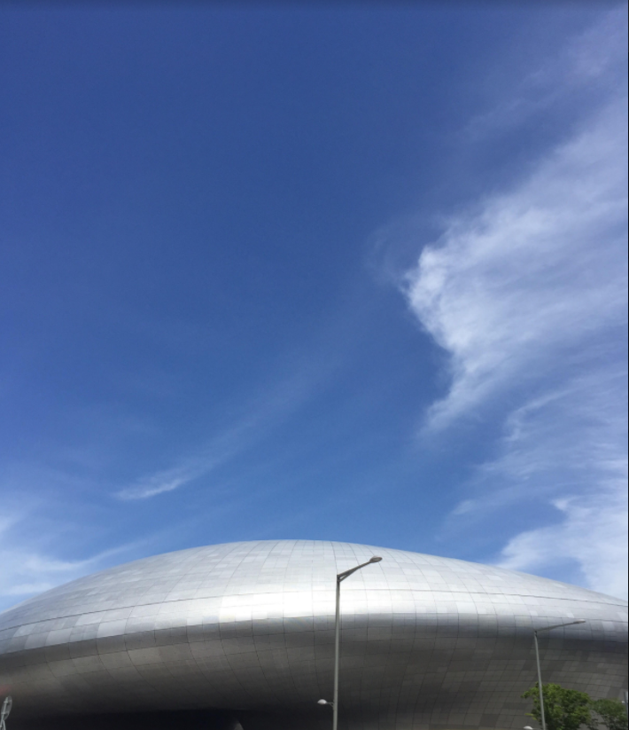
20170609

Upload - Optional, Stream
20170608
Cryptography
Symmetric-key cryptography
Public-key cryptography(Asymetric-key cryptography)
PKCS: Public Key Cryptography Standards
AES: Advanced Encryption Standard
SHA: Secure Hash Algorithm
CBC: Cipher Block Chaining
20170604
크루즈 컨트롤
20170601
Grep Console

20170526
CollectorImpl T A R
Supplier - supplier
BiConsumer - accumulator
BinaryOperator - combiner
Function - finisher
Collector T A R
CollectorImpl
20170525
toLinkedHashMapList
Shortkeys for Chrome
20170523
REQUIRED + REQUIRES_NEW + REQUIRED Log
Creating new transaction with name
Acquired Connection
Switching JDBC Connection
Participating in existing transaction
Suspending current transaction, creating new transaction with name
Acquired Connection
Switching JDBC Connection
Initiating transaction commit
Committing JDBC transaction on Connection
Releasing JDBC Connection
Returning JDBC Connection to DataSource
Resuming suspended transaction after completion of inner transaction
Participating in existing transaction
Initiating transaction rollback
Rolling back JDBC transaction on Connection
Releasing JDBC Connection
Returning JDBC Connection to DataSource
20170522
java9 Optional
https://blog.codefx.org/java/java-9-optional/
20170521
안아줘
 서러운 맘을 못 이겨
잠 못 들던 어둔 밤을 또 견디고
내 절망관 상관없이
무심하게도 아침은 날 깨우네
상처는 생각보다 쓰리고
아픔은 생각보다 깊어가
널 원망하던 수많은 밤이 내겐 지옥같아
내 곁에 있어줘 내게 머물러줘
네 손을 잡은 날 놓치지 말아줘
이렇게 니가 한걸음 멀어지면
내가 한걸음 더 가면 되잖아
서러운 맘을 못 이겨
잠 못 들던 어둔 밤을 또 견디고
내 절망관 상관없이
무심하게도 아침은 날 깨우네
상처는 생각보다 쓰리고
아픔은 생각보다 깊어가
널 원망하던 수많은 밤이 내겐 지옥같아
내 곁에 있어줘 내게 머물러줘
네 손을 잡은 날 놓치지 말아줘
이렇게 니가 한걸음 멀어지면
내가 한걸음 더 가면 되잖아
20170518
vi comment
add comment: ctlr+v :norm i#
remove comment: ctrl+v :norm x
RewriteEngine on
RewriteCond %{REQUEST_FILENAME} !=/index.html
RewriteCond %{REQUEST_FILENAME} !=/_hcheck.jsp
RewriteRule (.*) /index.html [R]
20170516
20170515
20170514
test
20170506
20170505
20170504
20170503
TestWatcher
Diary of a wimpy kid

20170502
Oriental Turtle Dove
 창의적인 테스트
창의적인 테스트
20170501
고터
20170430
20170429
먹고살기
예전에는 안주없이는 맥주를 못 마셨는데.
버드와이즈 약간 단맛이 난다.
윤식당을 보니 약간 힐링이 된다.
20170426
만화영화
미래소년 코난
빨간머리앤
메칸더 V
이상한 나라의 폴
엄마찾아 삼만리
은하철도 999
실버호크
우주보안관 장고
히맨
오즈의 마법사
개구리 왕눈이
시간탐험대
모래요정 바람돌이
옛날 옛적에
둘리
달려라 하니
호호 아줌마
플란다스의 개
요술공주 밍키
마징가
그랜다이저
꼬마자동차 붕붕
톰과 제리
2020 원드키드
명탐정 번개
손오공
원탁의 기사
독수리 오형제
떠돌이 까치
날아라 슈퍼보드
그랑죠
우주선장 율리시스
철완 아톰
보물섬
신비한 바다의 나디아
toMap, groupingBy
Collectors.toMap(keyMapper, valueMapper);
Collectors.toMap(keyMapper, valueMapper, mergeFunction);
Collectors.toMap(keyMapper, valueMapper, mergeFunction, mapSupplier);
Collectors.groupingBy(function)
Collectors.groupingBy(function, collector)
Collectors.groupingBy(function, supplier, collector)
20170422
20170420
인생의 깊은 의미에 대해서 통찰하는 것도 중요하지만 당장 현실의 문제를 풀어야 하는 것도 중요하다.
https://www.youtube.com/watch?v=O57iG3OOxXc&t=844s
20170417
그것만이 내 세상
그래 아마 난 세상을 모르나 봐
혼자 그렇게 먼 길을 떠났나 봐
하지만 후횐 없지 울며 웃던 모든 꿈
그것만이 내 세상
하지만 후횐 없지 찾아 헤맨 모든 꿈
그것만이 내 세상 그것만이 내 세상
20170411
 시끄러운 술집에 있다가 한적한 차집으로 옮겼는데
그곳에서 옛날 팝송 피아노곡이 흘러 나왔다.
힐링이 되는 것 같았다.
Happiness.
시끄러운 술집에 있다가 한적한 차집으로 옮겼는데
그곳에서 옛날 팝송 피아노곡이 흘러 나왔다.
힐링이 되는 것 같았다.
Happiness.
20170409
이제서야 테스트 코드를 작성하는 것이 자연스러워졌다.
20170408
20170407
Migration
어렵다.
20170401
HDD: Hype Driven Development
https://lazygyu.net/blog/hype_driven_development
20170331
Mustache Layout
20170329
Matrix - Interrogation
 As you can see, we've had our eye on you for some time now, Mr. Anderson. It seems that you've been living two lives. In one life, you're Thomas A. Anderson, program writer for a respectable software company, you have a social security number, you pay your taxes, and you help your landlady carry out her garbage. The other life is lived in computers, where you go by the hacker alias Neo and are guilty of virtually every computer crime we have a law for. One of these lives has a future, and one of them does not. I'm going to be as forthcoming as I can be, Mr. Anderson. You're here because we need your help. We know that you've been contacted by a certain individual, a man who calls himself Morpheus. Now whatever you think you know about this man is irrelevant. He is considered by many authorities to be the most dangerous man alive. My colleagues believe that I am wasting my time with you but I believe that you wish to do the right thing. We're willing to wipe the slate clean, give you a fresh start and all that we're asking in return is your cooperation in bringing a known terrorist to justice.
As you can see, we've had our eye on you for some time now, Mr. Anderson. It seems that you've been living two lives. In one life, you're Thomas A. Anderson, program writer for a respectable software company, you have a social security number, you pay your taxes, and you help your landlady carry out her garbage. The other life is lived in computers, where you go by the hacker alias Neo and are guilty of virtually every computer crime we have a law for. One of these lives has a future, and one of them does not. I'm going to be as forthcoming as I can be, Mr. Anderson. You're here because we need your help. We know that you've been contacted by a certain individual, a man who calls himself Morpheus. Now whatever you think you know about this man is irrelevant. He is considered by many authorities to be the most dangerous man alive. My colleagues believe that I am wasting my time with you but I believe that you wish to do the right thing. We're willing to wipe the slate clean, give you a fresh start and all that we're asking in return is your cooperation in bringing a known terrorist to justice.
20170327
af2
private $TYPE$ $NAME$;
$END$
public $TYPE$ get$METHOD_NAME$() {
return this.$NAME$;
}
public Optional<$TYPE$> get$METHOD_NAME$Optional() {
return Optional.ofNullable(this.$NAME$);
}
public $CLASS_NAME$ set$METHOD_NAME$($TYPE$ $NAME$) {
this.$NAME$ = $NAME$;
return this;
}
public $CLASS_NAME$ $NAME$IsNull() {
Assertions.assertThat(this.$NAME$).isNull();
return this;
}
public $CLASS_NAME$ $NAME$IsNotNull() {
Assertions.assertThat(this.$NAME$).isNotNull();
return this;
}
public $CLASS_NAME$ $NAME$IsEqualTo($TYPE$ $NAME$) {
Assertions.assertThat(this.$NAME$).isEqualTo($NAME$);
return this;
}
https://stackoverflow.com/insights/survey/2017/
20170326
Impletation
If문으로 구현 할것인가?
Interface 와 Inheritance로 구현 할것이가?
Functional로 구현 할것인가?
Enum으로 구현 할것인가?
20170323
 http://stackoverflow.com/questions/24054648/how-to-config-characterencodingfilter-in-springboot
https://github.com/zalando/logbook
http://jojoldu.tistory.com/133
http://stackoverflow.com/questions/24054648/how-to-config-characterencodingfilter-in-springboot
https://github.com/zalando/logbook
http://jojoldu.tistory.com/133
20170320
ChromeDriver Login
백광상회
https://www.instiz.net/pt?no=4455931
20170315
Create Field instance
Field 하나에 자동으로 생성되는 메서드들
테스트 케이스가 날 살리고 있다.
테스트 코드도 서비스 코드처럼 정성스럽게.
20170312
hibernate-envers
20170309
Mustache
https://spring.io/blog/2016/11/21/the-joy-of-mustache-server-side-templates-for-the-jvm
https://patrickgrimard.io/2016/01/18/spring-boot-devtools-first-look/
20170307
무릎이 아파 하체운동을 포기하고 이제는 어깨가 아파 상체운동을 포기해야 할것 같다.
자유도를 제약하는 것도 하나의 feature 가 될수 있다?
- JPA
- Mustache
Hibernate 5.1 support join on unrelated entity.
http://www.thoughts-on-java.org/how-to-join-unrelated-entities/
ERROR org.hibernate.hql.internal.ast.ErrorCounter.reportError.55 - Path expected for join!
antlr.SemanticException: Path expected for join!
at org.hibernate.hql.internal.ast.HqlSqlWalker.createFromJoinElement(HqlSqlWalker.java:368)
at org.hibernate.hql.internal.antlr.HqlSqlBaseWalker.joinElement(HqlSqlBaseWalker.java:3912)
at org.hibernate.hql.internal.antlr.HqlSqlBaseWalker.fromElement(HqlSqlBaseWalker.java:3698)
Entity and Domain
20170306
PM10
20170305
How many fingers?
https://www.youtube.com/watch?v=xNw1SSz18Gg
20170303
I'm just saying that the limits of your language are the limits of your world.
https://www.youtube.com/watch?v=sTlatYHU7i8
20170302
What made you change your mind?
Why did you change your mind?
What's her face is on the phone. Get the phone!
https://www.youtube.com/watch?v=uWXELArVcvc
20170227
4 basic form of immortality story
elixir
resurrection
soul
legacy
죽음은 우리에게 아무런 의미가 없다.
왜냐하면 우리가 살아 있을 때에는 죽음은 여기에 없고
죽음이 왔을때에는 우리는 이미 여기에 없기 때문이다.
- 그리스 철학자 에피쿠루스
https://www.youtube.com/watch?v=imyRPm8b2H8
20170226
I'm not feeling well.
I'm not feeling so hot today.
I'm feeling a bit under the weather.
I'm feeling ill today.
I think I'm coming down with a cold.
https://www.youtube.com/watch?v=_mDpvFSLJb0
20170225
That's too bad.
Hang in there.
Keep your chin up.
Things will get better.
Don't let it get you down.
I hope you get well soon.
Do you happen to know where the subway station is?
Which bus goes to Seoul Station?
Would you happen to know which bus goes to Seoul station?
Do you by any chance speak Korean?
https://www.youtube.com/watch?v=mncFf7ftlC8
20170223
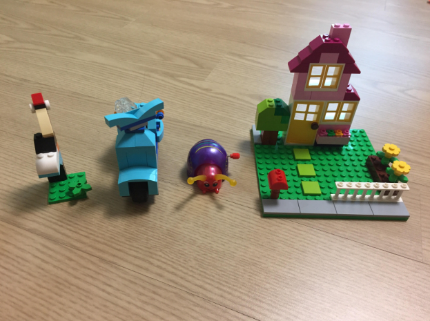
springboot.sample.entity.Project_$$_jvst80b_0
@OneToMany FetchType is LAZY.
@ManyToOne FetchType is EAGER.
20170222
org.hibernate.collection.internal.PersistentBag
엄마 까투리
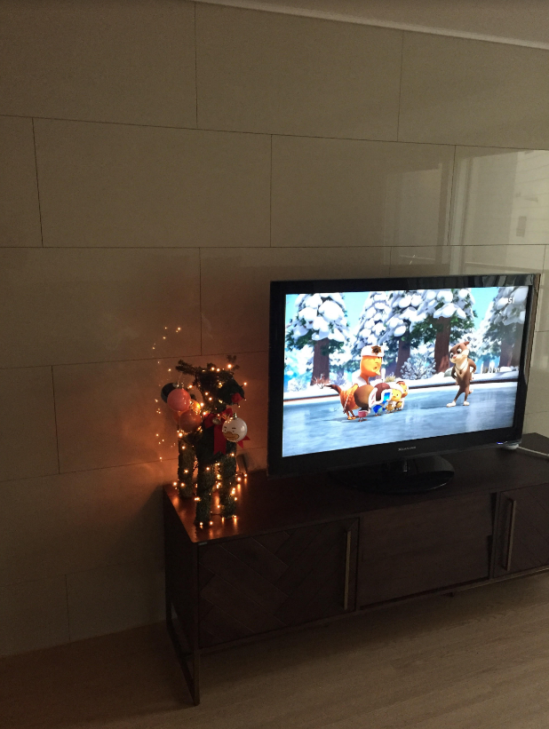
Jinq
 http://www.jinq.org/
http://www.jinq.org/
20170220
http://aoruqjfu.fun25.co.kr
http://jdm.kr/blog/141
20170218
TemporalAccessor
Temporal
TemporalField
ChronoField
TemporalUnit
ChronoUnit
TemporalAdjuster
TemporalAdjusters
Instant
LocalDate
LocalTime
LocalDateTime
OffsetDateTime
ChronoZonedDateTime
ZonedDateTime
ZoneId
ZoneRegion
ZoneOffset
TemporalQuery
TemporalQueries
Chronology
IsoChronology
TemporalAmount
Duration
ChronoPeriod
Period
DateTimeFormatter
DateTimeFormatterBuilder
TimeZone
http://www.slideshare.net/egolan74/date-time-java-8-jsr-310
20170213
20170210
grep ">>> performance time" catalina.out | \
awk '{ print $9 }' | \
sed -e 's/ms//g;s/,//g' | \
awk '{ sum+=$1 } END {print sum}'
20170209
Spring Initializr
20170208
20170207
20170205
20170203
Joey
https://pkaudio.herokuapp.com/Joey/kotlin
20170202
/etc/security/limits.d/90-nproc.conf
/etc/security/limits.conf
20170131
webpack
끊임없는 삽질의 연속이다.
20170129
use strict: eval 함수 내에서 선언된 변수
https://msdn.microsoft.com/ko-kr/library/br230269(v=vs.94).aspx
20170128
20170126
Water sprayer
20170124
1. intellij
2. chrome
3. iTerm
4. kakaotalk
5. skitch
6. workbench
7. text
8. system
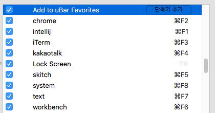
http://electron.atom.io/
Oh no 난 이미 멀리 와버렸는걸
어느새 이 모든 게 장난이 아닌 걸
Playing With Fire
https://www.youtube.com/watch?v=M-1vTs_uFRI
20170121
Smart Updater Plus
20170119
Component lifecycle
https://medium.com/little-big-programming/react%EC%9D%98-%EA%B8%B0%EB%B3%B8-%EC%BB%B4%ED%8F%AC%EB%84%8C%ED%8A%B8%EB%A5%BC-%EC%95%8C%EC%95%84%EB%B3%B4%EC%9E%90-92c923011818#.ejdds7y8i
20170118
redux-thunk
https://github.com/gaearon/redux-thunk/blob/master/src/index.js
20170117
React application with idiomatic redux
https://lpasslack.gitbooks.io/react-applications-with-idiomatic-redux/
IMHO: in my humble opinion
JSX In Depth
https://facebook.github.io/react/docs/jsx-in-depth.html
20170114
이런 방식이라도 사용해서 action의 상수와 reducer의 case문에서 벗어나고 싶다.
20170113
http://blog.naver.com/PostView.nhn?blogId=suica1&logNo=220758758556&categoryNo=14&parentCategoryNo=13&viewDate=¤tPage=1&postListTopCurrentPage=1&from=postView
20170112
20170111
webpack + react + redux + router
http://jpsierens.com/simple-react-redux-application/
20170109
Lodash
Finding the PID of the process using a specific port?
lsof -i :4001 | grep LISTEN
http://unix.stackexchange.com/questions/106561/finding-the-pid-of-the-process-using-a-specific-port
20170106
(state, action) => state
https://github.com/dwyl/learn-redux
Cannot call beginDrag while dragging
https://github.com/gaearon/react-dnd/issues/455
Class and Property Decorators
https://github.com/gaearon/react-dnd
https://github.com/hemanth/es-next
20170103
How can I know in git if a branch has been already merged into master?
git branch --merged master
git branch --no-merged master
http://stackoverflow.com/questions/226976/how-can-i-know-in-git-if-a-branch-has-been-already-merged-into-master
20170102
List
isomophic
https://blog.synyx.de/2016/03/springboot-reactjs-server-side-rendering/